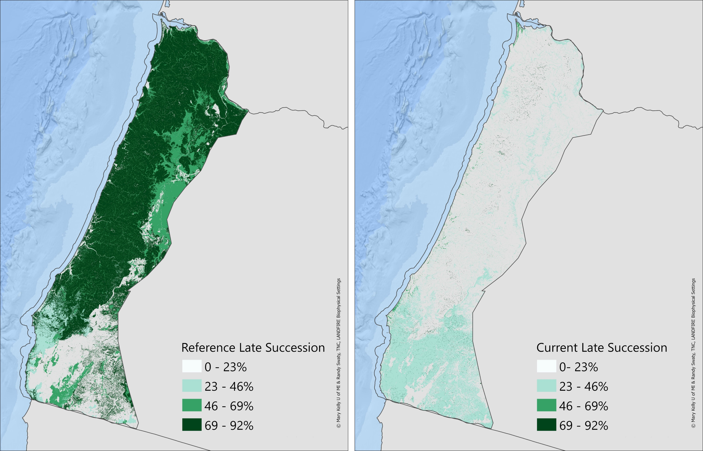
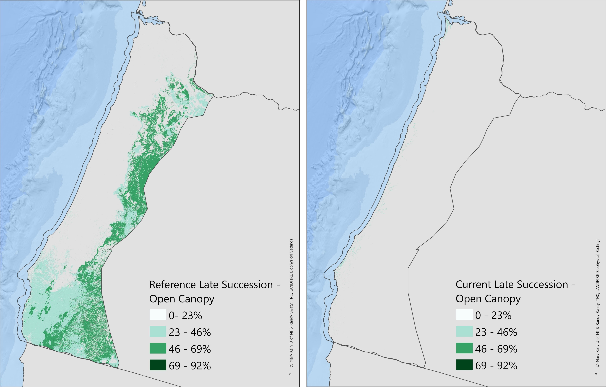
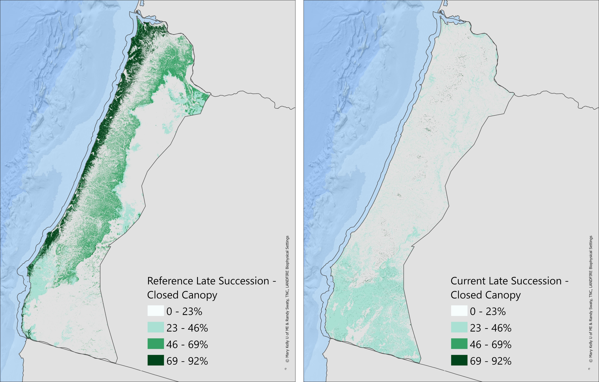

Results
Historical Ecosystems
This chart represents the historical ecosystems of our area of interest, split out by estimated acres of the various succession classes, pre-European Settlement (referred to as ‘Reference’). On the y axis are names of LANDFIRE’s BpSs and the x axis represent the number of acres. The colors represent the age classes; the purple and orange areas represent late-succession ecosystems. We mapped 28 BpSs within the area of interest. For the chart below excluded BpSs with footprints of less than 100,000 acres. Roughly 60% of the area is estimated to have been historically classified as late-successional habitat.
Estimated Percentages of Late-Succesional Habitat, Reference and Current
The map below represents the reference and current (ca2020) percentages of late-successional forest by ecosystem. In general there has been a substantial loss of late-successional habitat in this area. Loss is calculated per ecosystem, and the percent is the same across each ecosystem’s footprint. We did not map where late succession occured historically as it likely moved around so we cannot calculate change at a per pixel level.

Estimated Changes in Late Successional, Reference to Current
This chart shows changes in amounts of late-successional habitat by ecosystem, reference to current (ca2020). The y axis are the top LANDFIRE BpSs and the x axis displays the percent change from reference to current . The arrows/ecosystems are arranged in descending order from most prevalent to least (at the bottom). Yellow arrows indicate a loss, while the green ones represent a gain.
Here we present the same ecosystems as above, i.e., ones mapped with more than 100,000ac.

Reference and current open-canopy late successional habitat
This map represents the percent of reference (left) and current (right), open-canopy, late-successional forests. Reference open-canopy late-succession habitat ranged from 5-68% per BpS, and currently that amount ranges from 1-28% per BpS.

Reference and current closed-canopy late successional habitat
This map represents the percent of reference (left) and current (right), closed-canopy, late-successional forests. Reference closed-canopy late-succession habitat ranged from 42-55% per BpS, and currently that amount ranges from 32-84% per BpS.

Estimated Changes in Late Successional Habitat, Reference to Current, Open and Closed
This chart shows change in amounts of late-successional open and closed canopy habitat by ecosystem, from modeled reference to mapped using data from 2020. The y axis are the top LANDFIRE BpSs and the x axis displays the percent change from reference to ca2020. The arrows/ecosystems are arranged in descending order from most prevalent to least (at the bottom). Yellow arrows indicate a loss, while the green ones represent a gain.
Example interpretations: 1) North Pacific Maritime Mesic-Wet Douglas-fir Western Hemlock Forest experienced a ~73% decrease in closed-canopy and a ~5% decrease in open-canopy forest type. 2) Mediterranean California Dry-Mesic Mixed Conifer Forest and Woodland experienced a ~23% increase in closed-canopy and a ~35% decrease in open-canopy forest type.